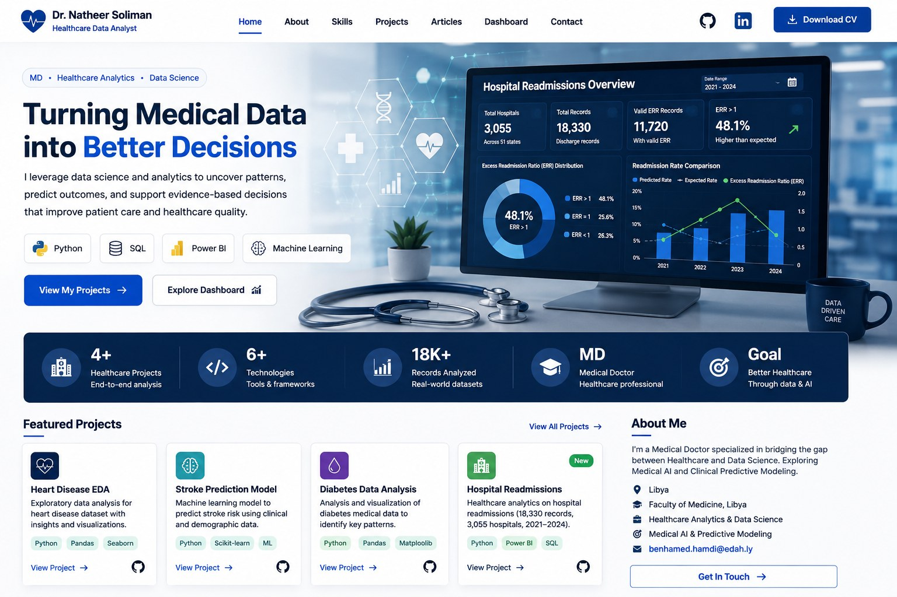

▥01
Healthcare Data Analytics
Data cleaning, data-quality review, KPI development, statistical analysis, benchmarking and decision-ready insights.
We help hospitals, clinics, healthcare groups and health-tech teams transform operational and clinical data into decision-ready analytics, executive dashboards, automated reporting and responsible AI-enabled workflows.
Engagements are scoped around a concrete management, quality or analytics problem rather than a generic AI implementation.
KPI reporting, readmission analysis, occupancy, length of stay, utilization and executive dashboards.
Service trends, workload visibility, recurring reporting and operational performance analysis.
Cross-site benchmarking, management scorecards and standardized reporting workflows.
Healthcare data analysis, product analytics, risk-oriented reporting and decision-support workflows.
Focused services designed around operational visibility, reporting quality, healthcare KPIs and responsible use of AI.
Data cleaning, data-quality review, KPI development, statistical analysis, benchmarking and decision-ready insights.
Dashboards for utilization, readmissions, occupancy, capacity, quality, performance and management reporting.
Recurring executive summaries, KPI packs and approved reporting workflows that reduce manual reporting effort.
AI-assisted administrative and analytical workflows with clear human review and governance boundaries.
A public-data proof-of-work showing the workflow we can adapt to a hospital's approved internal use case.
Public CMS hospital readmission data was used to demonstrate data-quality review, metric interpretation, clinical-measure segmentation and management-oriented reporting.
Missingness, suppressed values, footnotes and types.
Expected vs predicted rates, ratios and counts.
Condition, hospital and performance comparison.
Visuals, limitations and management interpretation.
This is a portfolio case study using public data, not a claim of results achieved for a client hospital.
Switch between sample views. All numbers below are synthetic demonstration data and do not represent a real hospital or patient population.
A client dashboard would use only approved metrics and agreed data access. No patient-identifiable information is used in this public demo.
The pilot is designed for a hospital or clinic that wants to evaluate analytics before committing to a larger engagement. We begin with a defined operational question and an approved, limited dataset.
Scope, quality and governance.
Metrics and analysis.
Management view and validation.
Findings, limitations and next steps.
Clarify the business or healthcare objective, users, data sources and success criteria.
Define what data is allowed, how it is de-identified where needed and how access is controlled.
Clean, analyze, visualize and review the selected metrics, assumptions and limitations.
Deliver the dashboard and report with a human-reviewed explanation and next-step recommendations.
Public portfolio projects demonstrate the analytical workflow, code and healthcare-data focus behind Suliaman HealthData AI.
Analysis of CMS readmission performance across thousands of hospitals and six HRRP clinical conditions, including data-quality review and benchmarking.
Clinical exploratory analysis and predictive modeling workflow with model evaluation and leakage-aware validation.
Healthcare classification project demonstrating predictive-model artifacts and a validation-oriented machine-learning workflow.
Clinically informed cleaning, exploratory analysis and statistical comparisons across diabetes-related variables.
Portfolio projects use public or demonstration datasets. They are presented as proof of analytical work, not as client engagements or clinical products.

Building at the intersection of clinical medicine, healthcare analytics, business intelligence and responsible AI, with a focus on converting healthcare data into useful operational and decision-support insights.
Healthcare analytics must be useful without treating sensitive data casually. Each engagement defines the allowed data, access model, retention expectations and review process before analysis begins.
We request only the fields needed for the agreed analytical use case and avoid collecting unnecessary identifiers.
For analytical work that does not require patient identity, organizations should provide de-identified or appropriately pseudonymized datasets.
Client work should use agreed access controls, approved storage locations and clearly defined data-handling responsibilities.
Analytical outputs are reviewed and contextualized. The service is not positioned as an autonomous diagnostic or treatment system.
Specific regulatory obligations depend on the organization, jurisdiction, data type and technical environment. Suliaman HealthData AI does not claim a blanket HIPAA, GDPR or other regulatory certification. Formal client engagements should define applicable requirements through appropriate contracts, confidentiality terms, access controls and data-processing arrangements.
Tell us the operational question, reporting challenge or analytics use case. We can use a short discovery call to decide whether a 30-day pilot makes sense. Do not send patient-identifiable information by public email.